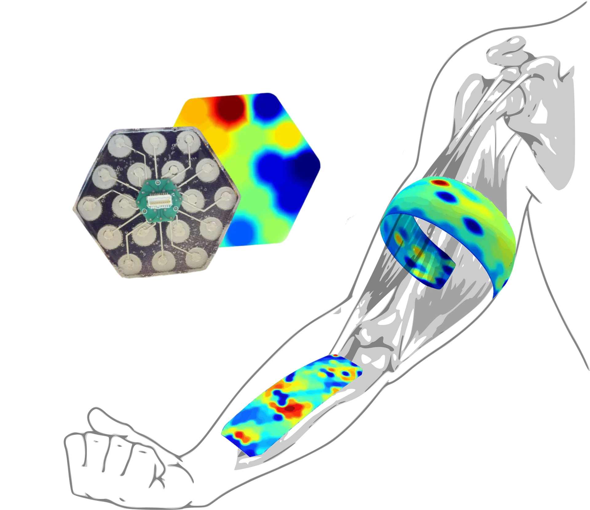

High-density electrode arrays and neural imaging surfaces that read muscle, nerve, and cardiac signals through the skin — non-invasive, continuous, clinical-grade.

Polytecks is an early-stage biotechnology company developing high-density, skin-contact sensor arrays that turn the human body into a readable signal.
Placeholder for mission narrative and origin story.
Founder bios, advisors, and clinical partners.
Our proprietary sensor geometry samples at millimeter resolution across the skin surface, producing a live spatial map of bioelectric activity.
Diagram of the 19-channel hex lattice.
From skin → amplifier → reconstruction → app.
Sampling rate, SNR, clinical benchmarks.
List of filings and peer-reviewed work.
A clinical-grade desktop unit and a wearable sleeve, sharing the same underlying sensing fabric and reconstruction software.
Bench-top array for research labs.
Continuous-wear soft array for the forearm.
We're a small, technical team working across electrical engineering, machine learning, neuroscience, and industrial design. Remote-friendly, Boston-based.
Design amplifier front-ends and sensor readout.
Reconstruct source signals from surface arrays.
Wearable industrial design and enclosures.
Run early studies with partner institutions.
Partnerships, clinical collaborations, press, and investor inquiries.
General inquiries. We respond within two business days.
Media and speaking requests.